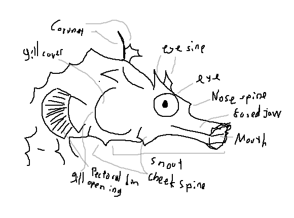
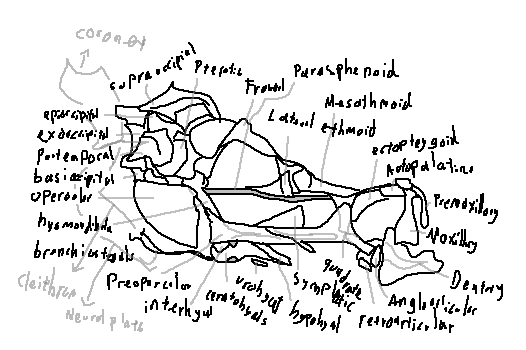
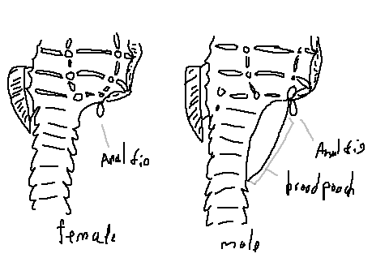
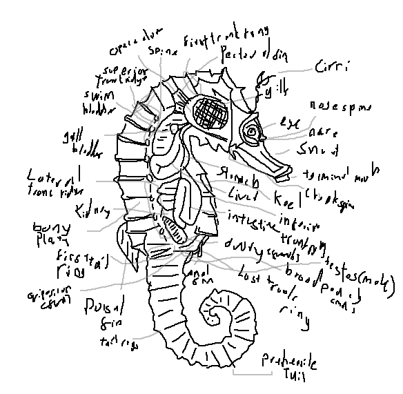
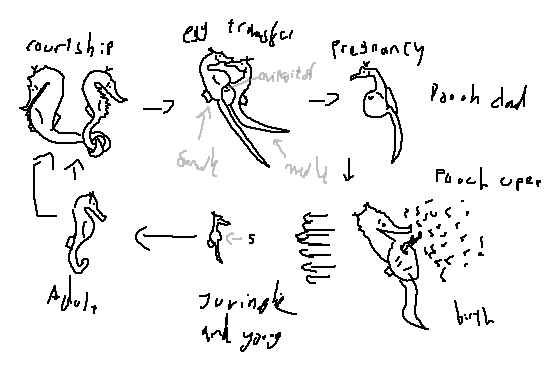
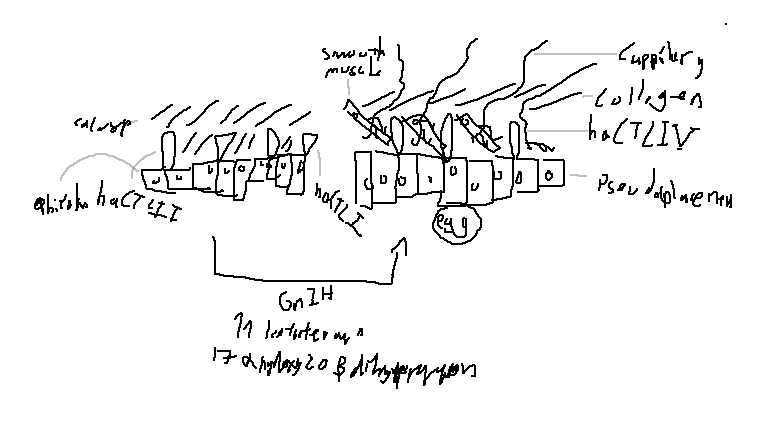
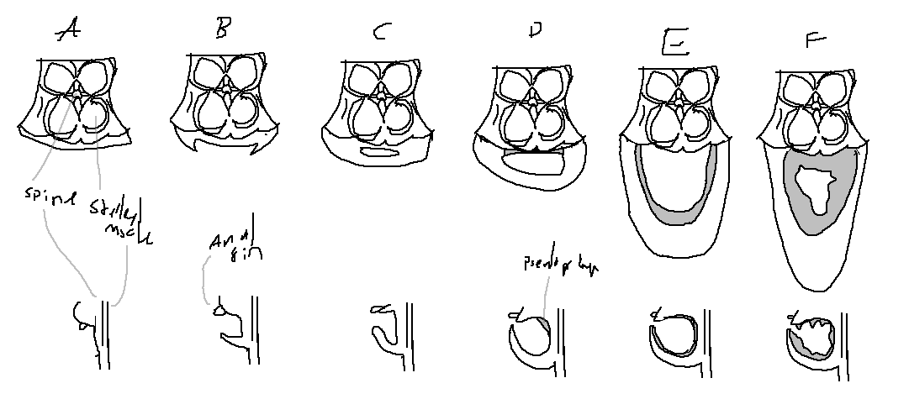

Seahorses (genus Hippocampus) are small marine fishes of the family Syngnathidae. They are distinguished by an upright posture, a prehensile tail, a tubular snout, and a head that resembles a horse. Males carry developing embryos in a specialized brood pouch — a unique adaptation among vertebrates.

Corona: The fleshy, often spiny crown on top of the head.
Gill cover (operculum): Bony plate protecting the gills.
Eye spine: A small spine above or behind the eye.
Eye: Large, independently movable, providing excellent binocular vision.
Nose spine: A spine on the snout.
Fused jaw: The upper and lower jaws are fused into a tubular, toothless snout.
Mouth: Terminal, small, used for sucking prey.
Snout: Elongated, tubular, used for precision feeding.
Cheek spine: A spine on the cheek region.
Pectoral fin: Small, fan‑shaped fin behind the head, used for steering.
Gill opening: A small slit on the side of the head.

Coronet: The bony crest on top of the skull.
Supraoccipital: The dorsal midline bone of the skull.
Pterotic: Bone of the otic region.
Frontal: Paired bones of the forehead.
Parasphenoid: Ventral midline bone of the skull.
Lateral ethmoid: Bones of the olfactory region.
Mesethmoid: Midline bone of the snout.
Ectopterygoid: Palatal bone.
Autopalatine: Upper jaw supporting bone.
Premaxilla: Upper jaw bone (fused).
Maxilla: Upper jaw bone (reduced).
Dentary: Lower jaw bone.
Angloarticular: Lower jaw articulation bone.
Retroarticular: Posterior lower jaw bone.
Quadrate: Jaw articulation bone.
Symplectic: Suspensorium bone.
Hyomandibula: Suspensorium bone.
Ceratohyal: Hyoid arch bone.
Interhyal: Hyoid arch bone.
Preopercular: Cheek bone.
Neuroplate: Cranial bone.
Cleithrum: Primary pectoral girdle bone.
Branchiostegals: Gill‑cover supporting rays.
Opercular: Gill‑cover bones.
Basihyal: Hyoid bone.
Posttemporal: Skull‑pectoral girdle connection.
Exoccipital: Occipital bones.
Epioccipital: Occipital bones.

Belly: The ventral region, often with bony rings.
Anal fin: Small fin near the tail, used for fine maneuvering.
Brood pouch (male): A ventral pouch where males incubate embryos. In females the pouch is absent; they have a simpler ventral surface.
Male vs female: Males have a fully developed brood pouch with a slit‑like opening; females have a sharp, keel‑like ventral ridge without a pouch.

Spine: The vertebral column is rigid and supports the body.
Opercular (gill cover): Bony plate covering gills.
Superior trunk ridge: The dorsal body ridge.
Swim bladder: Present, used for buoyancy.
Gall bladder: Stores bile from the liver.
Lateral trunk ridge: The side ridge of the body.
Kidney: Filters waste.
Bony plates: The body is covered with bony rings.
First tail ring: The first ring of the tail.
Ovipositor (female): A short tube for egg deposition.
Dorsal fin: The primary propulsive fin.
Tail ring: Bony rings of the tail.
Prehensile tail: Grasping tail used for anchoring.
Last trunk ring: The final ring before the tail.
Testes (male): Paired reproductive organs.
Ovary (female): Paired ovaries.
Intestine: Digestive tract.
Inferior trunk ridge: Ventral body ridge.
Liver: Large organ for metabolism and buoyancy.
Keel: A ridge on the belly.
Stomach: Simple, tubular.
Cheek spine: Spine on the cheek.
Terminal mouth: Mouth at the tip of the snout.
Snout: Tubular feeding organ.
Eye: Mobile, with good vision.
Nare (nostril): Single nostril on each side.
Nose spine: Spine on the snout.
Gills: Respiratory organs.
Cirri: Skin filaments (often absent).
Pectoral fin: Steering fin.
First trunk ridge: The first dorsal ridge.

Stage 1 – Initiation: Male inflates his brood pouch by pumping water, showing it to the female. Both fish change colour and perform parallel swimming.
Stage 2 – Mutual display: The pair swims in synchrony, often rotating around each other, with snouts touching and tails intertwined.
Stage 3 – Final approach: The male and female rise together in the water column; the female aligns her ovipositor with the male’s pouch opening.
Stage 4 – Egg transfer: The female deposits her eggs into the male’s pouch in a single rapid event; the pouch closes and fertilisation occurs internally.
Pregnancy: The male carries the embryos in the brood pouch for 2–4 weeks (species‑dependent), providing oxygen and nutrients.
Birth: The male undergoes strong muscular contractions, ejecting fully developed, miniature seahorses (fry) through the pouch opening.
Young / Juvenile: Newborns are independent, planktonic, and resemble adults; they settle to the benthos after a few weeks.
Adult: Reach sexual maturity at ~3–6 months; adults are territorial and form monogamous pairs.

Pseudoplacenta: A specialised tissue inside the brood pouch that provides nourishment and gas exchange to embryos. It is rich in reticular fibers and capillaries.
Smooth muscle: Concentrated around the pouch entrance; regulates opening/closing during courtship and birth.
Collagen fibers: Provide structural strength and elasticity to the pouch wall.
haCTL I, II, IV: C‑type lectins expressed in the pouch epithelium; involved in embryo defence and microbial agglutination.
Capillaries: Dense vascular network in the pseudoplacenta for oxygen and nutrient exchange.
GnIH (gonadotropin‑inhibitory hormone): Regulates reproductive behaviour and steroidogenesis.
Ketotestosterone: Primary androgen in male seahorses, important for pouch development.
17α‑hydroxy‑20β‑dihydroprogesterone: Progestogen involved in egg maturation and courtship behaviour.

Stage A (before formation): No external pouch; ventrolateral ridges begin to thicken.
Stage B (primordium): Two linear folds appear on the ventrolateral sides.
Stage C (early): The folds fuse at the midline; pseudoplacenta primordium appears dorsally.
Stage D (middle): Pseudoplacenta expands; luminal epithelium differentiates; mucous cells abundant.
Stage E (late): Pseudoplacenta surrounds the pouch; smooth muscle develops; pouch‑folds form.
Stage F (final): Fully developed, ready to receive eggs; pouch entrance is functional.
Timing: B–C: 1–3 months; D–E: 3–7 months; F: 6–8 months (temperature‑dependent).
Below are detailed accounts for every recognised seahorse species, including size, distribution, diet, colour/pattern, and additional notes from the scientific literature.

Size: Up to 35 cm. Distribution: Temperate waters of southern Australia and New Zealand. Diet: Small crustaceans, mysids, and larval fishes. Colour/Pattern: Highly variable – yellow, orange, brown, or grey, often with dark spots and a distinct "belly" that is deeper than other species. Notes: One of the largest seahorses; forms monogamous pairs; breeding occurs in spring–summer. Studies on brood pouch morphology (Kawaguchi et al. 2017) have used this species as a model for pseudoplacenta development.

Size: Up to 19 cm. Distribution: West African coast from Senegal to Angola. Diet: Benthic invertebrates, especially copepods and amphipods. Colour/Pattern: Usually pale to dark brown with a reticulated pattern of darker lines and spots; sometimes has a yellow snout. Notes: Often found in seagrass beds and estuaries; threatened by bycatch and habitat loss.

Size: Up to 16 cm. Distribution: Northwestern Australia (Exmouth Gulf to Darwin). Diet: Small crustaceans and zooplankton. Colour/Pattern: Slender body, usually pale brown with fine dark lines; a distinct narrow belly (hence the name). Notes: Lives among soft corals and sponges; males have a very deep brood pouch.

Size: Up to 15 cm. Distribution: Southeast Asia (Philippines, Malaysia, Indonesia). Diet: Small shrimp, amphipods, and copepods. Colour/Pattern: Often pale yellow with brown spots and a prominent, spiky coronet. Notes: Inhabits seagrass and coral rubble; heavily traded for traditional medicine.

Size: Up to 8 cm. Distribution: Southern Australia (Victoria to Western Australia). Diet: Small planktonic crustaceans. Colour/Pattern: Short, rounded head; colour ranges from white to brown, often with small dark spots. Notes: Inhabits shallow, sheltered bays and estuaries; relatively short snout compared to other species.

Size: Up to 15 cm. Distribution: Western Indian Ocean (South Africa, Mozambique, Tanzania). Diet: Small benthic crustaceans. Colour/Pattern: Giraffe‑like pattern of dark spots and blotches on a pale background; distinctive high coronet. Notes: Occurs on coral reefs and rocky substrates; listed as Vulnerable by the IUCN.

Size: Up to 12 cm. Distribution: South Africa (Knysna estuary and surrounding waters). Diet: Small crustaceans and larval fish. Colour/Pattern: Pale to dark brown with a dense network of fine spots and lines; often has a reddish or orange snout. Notes: Endemic to South Africa; one of the few seahorses found primarily in estuaries; endangered due to habitat degradation.

Size: Up to 9 cm. Distribution: Beibu Bay (Gulf of Tonkin) – China and Vietnam. Diet: Small crustaceans. Colour/Pattern: Pale yellowish with irregular brown bands; a small, rounded coronet. Notes: Recently described (2016); occurs in seagrass meadows; little else is known.

Size: Up to 18 cm. Distribution: Southeast Asia (Singapore, Malaysia, Thailand, Philippines). Diet: Mysids, copepods, and small shrimp. Colour/Pattern: Tiger‑tail pattern – yellow to brown body with dark transverse bands; often has a spiny coronet. Notes: Common in the aquarium trade; listed as Vulnerable; forms pair bonds.

Size: Up to 10 cm. Distribution: Japan and Korea (temperate coastal waters). Diet: Small crustaceans. Colour/Pattern: Reddish‑brown to orange, with a tall, ornate coronet (crown). Notes: Inhabits Sargassum seaweed and seagrass beds; breeding season is summer.

Size: Up to 7 cm. Distribution: New Caledonia (South Pacific). Diet: Small benthic crustaceans. Colour/Pattern: Pale brown with a curved, spine‑like coronet; body has fine reticulations. Notes: A deep‑water species (50–100 m); little is known about its ecology.

Size: Up to 7 cm. Distribution: Northwestern Australia (Dampier Archipelago). Diet: Small planktonic crustaceans. Colour/Pattern: Low, rounded coronet; colour ranges from cream to dark brown with a few dark spots. Notes: Often found in shallow, protected bays; lives among seagrass and algae.

Size: Up to 5 cm. Distribution: Red Sea (Egypt, Sudan). Diet: Small crustaceans. Colour/Pattern: Soft‑coral mimic – bright red to orange with small white tubercles. Notes: Associated with gorgonian corals; one of the few seahorses that lives on soft corals; described in 2009.

Size: Up to 19 cm. Distribution: Western Atlantic (Nova Scotia to Venezuela, including Gulf of Mexico). Diet: Small crustaceans, especially copepods and amphipods. Colour/Pattern: Highly variable – grey, brown, yellow, or orange, with a pattern of fine lines and spots; often has a "lined" appearance. Notes: One of the most common seahorses in the aquarium trade; forms permanent pair bonds; studied for its reproductive physiology.

Size: Up to 10 cm. Distribution: Hawaii (endemic). Diet: Small crustaceans. Colour/Pattern: Pale brown to reddish, often with a series of dark spots along the trunk. Notes: Lives in shallow coral reefs and rocky areas; one of the least studied Hawaiian seahorses.

Size: Up to 20 cm. Distribution: Eastern Atlantic (British Isles to Mediterranean, Senegal). Diet: Small crustaceans, fish larvae. Colour/Pattern: Long‑snouted; colour varies from grey to brown, often with tiny white spots and skin filaments. Notes: Inhabits seagrass meadows and estuaries; listed as Data Deficient but locally threatened.

Size: Up to 8 cm. Distribution: Korea and Japan (western Pacific). Diet: Small crustaceans. Colour/Pattern: Reddish to brown, with a faint reticulated pattern; coronet low. Notes: Described in 2017; occurs in seagrass and macroalgae beds; closely related to H. mohnikei.

Size: Up to 15 cm. Distribution: Eastern Atlantic (Mediterranean, Canary Islands, UK). Diet: Small crustaceans, especially copepods. Colour/Pattern: Short‑snouted; colour ranges from brown to yellow, often with a mottled appearance and tiny white spots. Notes: Occurs in seagrass, rocky areas, and ports; one of the two European species.

Size: Up to 17 cm. Distribution: Indo‑Pacific (East Africa to Japan and Australia). Diet: Small crustaceans. Colour/Pattern: Spiny seahorse – yellowish to brown with numerous sharp spines on the head and body; often with a pattern of dark spots. Notes: Inhabits coral reefs and seagrass beds; listed as Vulnerable due to overfishing.

Size: Up to 30 cm (one of the largest). Distribution: Eastern Pacific (California to Peru, including Galápagos). Diet: Small crustaceans, fish larvae. Colour/Pattern: Pale brown to yellow with dark spots and a relatively smooth coronet. Notes: Found in kelp forests and rocky reefs; threatened by overfishing and habitat loss.

Size: Up to 14 cm. Distribution: Western Indian Ocean (Persian Gulf, Arabian Sea, East Africa). Diet: Small crustaceans. Colour/Pattern: Reddish‑brown to pale grey, with a prominent coronet and fine dark spots. Notes: Inhabits soft corals and seagrass; one of the few seahorses in the Arabian region.

Size: Up to 6 cm. Distribution: Lord Howe Island (Australia). Diet: Small planktonic crustaceans. Colour/Pattern: Collared seahorse – brown to grey with a distinctive dark band across the "neck" region. Notes: Endemic to Lord Howe Island; inhabits rocky reefs and algal beds.

Size: Up to 28 cm. Distribution: Indo‑Pacific (East Africa to Japan and Australia). Diet: Small crustaceans, mysids. Colour/Pattern: Great seahorse – pale to dark brown, often with a pattern of fine spots and lines; a high coronet. Notes: One of the largest seahorses; heavily traded for traditional medicine; listed as Vulnerable.

Size: Up to 30 cm. Distribution: Indo‑Pacific (East Africa to Japan and Australia). Diet: Small crustaceans, larval fish. Colour/Pattern: Spotted seahorse – colour varies from yellow to brown or black, often with dark spots; smooth coronet. Notes: Common in estuaries and seagrass; widely traded; listed as Vulnerable.

Size: Up to 8 cm. Distribution: Japan, Korea, China (western Pacific). Diet: Small crustaceans. Colour/Pattern: Japanese seahorse – reddish‑brown to dark grey, often with a mottled pattern; coronet low. Notes: Inhabits seagrass and macroalgae; threatened by coastal development.

Size: Up to 6 cm. Distribution: Southwestern Australia (Rottnest Island to Esperance). Diet: Small crustaceans. Colour/Pattern: Paradoxical seahorse – pale brown with a dark, stripe‑like pattern; unusual body shape with a very deep trunk. Notes: Described in 2010; lives among sponges and bryozoans.

Size: Up to 18 cm. Distribution: Southwestern Atlantic (Argentina, Uruguay, Brazil). Diet: Small crustaceans. Colour/Pattern: Patagonian seahorse – brown to grey with a pattern of fine lines and small spots; a moderately spiny coronet. Notes: Inhabits estuaries and shallow coastal waters; one of the most southerly seahorses.

Size: Up to 8 cm. Distribution: Australia (Queensland and New South Wales). Diet: Small crustaceans. Colour/Pattern: Flatface seahorse – flat‑faced, with a pale brown to grey body and a dark "false eye" spot on the cheek. Notes: Inhabits seagrass and rubble; males have a very deep pouch.

Size: Up to 17 cm. Distribution: Western Atlantic (Caribbean, Florida to Brazil). Diet: Small crustaceans. Colour/Pattern: Longsnout seahorse – colour ranges from yellow to orange, brown or black, often with a pattern of tiny white spots and a very long snout. Notes: One of the most popular aquarium seahorses; listed as Near Threatened.

Size: Up to 8 cm. Distribution: Japan (Honshu, Shikoku, Kyushu). Diet: Small crustaceans. Colour/Pattern: Sindo's seahorse – reddish‑brown to dark, with a low coronet and fine pale spots. Notes: Inhabits seagrass and macroalgae beds; little studied.

Size: Up to 15 cm. Distribution: Indo‑Pacific (Sri Lanka to northern Australia and the Philippines). Diet: Small crustaceans. Colour/Pattern: Hedgehog seahorse – brown to yellow, covered with numerous sharp spines; coronet high and spiny. Notes: Occurs on soft bottoms and seagrass; vulnerable to trawling.

Size: Up to 20 cm. Distribution: Western Australia (Shark Bay to Perth). Diet: Small crustaceans. Colour/Pattern: West Australian seahorse – brown to grey with a pattern of dark spots and lines; coronet low to moderate. Notes: Inhabits seagrass and reef flats; forms seasonal pairs.

Size: Up to 18 cm. Distribution: Indo‑Pacific (East Africa to Japan and Australia). Diet: Small crustaceans. Colour/Pattern: Longnose seahorse – usually brown to reddish, with three large dark spots on the trunk; snout is noticeably long. Notes: Often found in shallow seagrass beds; heavily fished for traditional medicine.

Size: Up to 22 cm. Distribution: South Australia (Great Australian Bight). Diet: Small crustaceans. Colour/Pattern: Lazarus seahorse – dark brown to almost black, with a relatively smooth body and a low coronet. Notes: One of the least known seahorses; thought to be rare and restricted to deep‑water reefs.

Size: Up to 6 cm. Distribution: Seychelles (western Indian Ocean). Diet: Small crustaceans. Colour/Pattern: Tyro seahorse – pale brown with a distinct dark stripe along the trunk; a high, spiny coronet. Notes: Described in 2009; occurs on soft corals and rocky reefs.

Size: Up to 12 cm. Distribution: Eastern Australia (Queensland to New South Wales). Diet: Small crustaceans. Colour/Pattern: White's seahorse – colour varies from white to brown, often with a pattern of fine dark lines and a moderately high coronet. Notes: Inhabits seagrass, sponge gardens, and artificial structures; a common aquarium species.

Size: Up to 8 cm. Distribution: Northern Australia (Queensland to Western Australia). Diet: Small crustaceans. Colour/Pattern: Zebra seahorse – bold dark and light vertical stripes, resembling a zebra; a moderately high coronet. Notes: Rarely seen; prefers turbid, shallow waters.

Size: Up to 4 cm (one of the smallest). Distribution: Western Atlantic (Bermuda, Florida, Gulf of Mexico). Diet: Tiny crustaceans. Colour/Pattern: Dwarf seahorse – usually pale to dark brown with small dark spots; a tiny, rounded coronet. Notes: Lives among seagrass (especially turtle grass) and algae; forms seasonal pairs; popular in the aquarium trade.
Pygmy seahorses (subfamily Hippocampinae) are a group of extraordinarily small seahorses, typically less than 3 cm in length. They are masters of camouflage, often matching the colour and texture of their host gorgonian corals. They have a reduced number of trunk rings, a prehensile tail, and a unique reproductive strategy. The group includes species such as H. minotaur, H. denise, H. colemani, H. pontohi, H. severnsi, H. satomiae, H. waleananus, H. nalu, and H. japapigu. They are highly cryptic and were only discovered in the late 20th and early 21st centuries.

Size: ~2.5 cm. Distribution: Eastern Australia (NSW). Diet: Small crustaceans. Colour/Pattern: Bull‑necked; brown to reddish with a distinct "bull‑like" neck; tiny tubercles. Notes: Found on gorgonians; described in 1997.

Size: ~2.2 cm. Distribution: Indo‑Pacific (Indonesia, Philippines, Palau). Diet: Small copepods. Colour/Pattern: Pale orange to pink, matching the gorgonian Muricella; very slender snout. Notes: One of the smallest seahorses; described in 2003.

Size: ~2.5 cm. Distribution: Lord Howe Island (Australia). Diet: Small crustaceans. Colour/Pattern: Pale brown to yellow, with a reticulated pattern and a prominent coronet. Notes: Endemic to Lord Howe; lives on soft corals.

Size: ~2.0 cm. Distribution: Indonesia (Bali, Sulawesi). Diet: Small planktonic crustaceans. Colour/Pattern: Bright orange to red with small white tubercles; mimics Halimeda algae. Notes: Described in 2008; often found on calcareous algae.

Size: ~2.0 cm. Distribution: Indonesia (Sulawesi, Flores). Diet: Small crustaceans. Colour/Pattern: Pale pink to yellow with a pattern of fine red lines; very slender body. Notes: Closely related to H. pontohi; inhabits gorgonians.

Size: ~1.8 cm (the smallest). Distribution: Indonesia (Sulawesi, Bali). Diet: Tiny crustaceans. Colour/Pattern: Pale to dark brown, often with a purple hue; a low coronet. Notes: Described in 2008; lives on soft corals at 15–30 m depth.

Size: ~2.2 cm. Distribution: Indonesia (Walea Island). Diet: Small crustaceans. Colour/Pattern: Orange‑yellow with dark spots; mimics Muricella gorgonians. Notes: Described in 2009; restricted to a small area.

Size: ~2.0 cm. Distribution: South Africa (Sodwana Bay). Diet: Small crustaceans. Colour/Pattern: Pale brown to pink with a network of fine lines; a low coronet. Notes: Described in 2020; the first pygmy seahorse from Africa.

Size: ~1.6 cm. Distribution: Japan (Izu Peninsula). Diet: Small crustaceans. Colour/Pattern: Reddish‑orange with a distinct white "saddle" mark; very small coronet. Notes: Described in 2018; occurs on shallow reefs (5–15 m).